ERCC normalization
2015-06-15
Last updated: 2015-06-19
Code version: 750e4602c9938fd588568d94a8ce5d36ba79522d
In this analysis:
- Investigate the fit between ERCC counts per million and the concentration for each sample
- Perform a simple linear shift normalization where the fit between the ERCC counts per million from a sample and the expected concentrations are used to convert the gene counts per million to concentrations.
- Normalize with RUVg using the ERCC spike-ins as negative control genes.
- Compare the normalization approaches.
Setup
library("edgeR")
library("ggplot2")
theme_set(theme_bw(base_size = 16))
library("RUVSeq")
library("preprocessCore")
library("affy")
source("functions.R")Input annotation.
anno <- read.table("../data/annotation.txt", header = TRUE,
stringsAsFactors = FALSE)
head(anno) individual batch well sample_id
1 19098 1 A01 NA19098.1.A01
2 19098 1 A02 NA19098.1.A02
3 19098 1 A03 NA19098.1.A03
4 19098 1 A04 NA19098.1.A04
5 19098 1 A05 NA19098.1.A05
6 19098 1 A06 NA19098.1.A06Input molecule counts.
molecules <- read.table("../data/molecules.txt", header = TRUE,
stringsAsFactors = FALSE)Input ERCC concentration information.
ercc <- read.table("../data/ercc-info.txt", header = TRUE, sep = "\t",
stringsAsFactors = FALSE)
colnames(ercc) <- c("num", "id", "subgroup", "conc_mix1", "conc_mix2",
"expected_fc", "log2_mix1_mix2")
head(ercc) num id subgroup conc_mix1 conc_mix2 expected_fc log2_mix1_mix2
1 1 ERCC-00130 A 30000.000 7500.00000 4 2
2 2 ERCC-00004 A 7500.000 1875.00000 4 2
3 3 ERCC-00136 A 1875.000 468.75000 4 2
4 4 ERCC-00108 A 937.500 234.37500 4 2
5 5 ERCC-00116 A 468.750 117.18750 4 2
6 6 ERCC-00092 A 234.375 58.59375 4 2stopifnot(nrow(ercc) == 92)Input list of quality single cells.
quality_single_cells <- scan("../data/quality-single-cells.txt",
what = "character")Keep only the single cells that passed the QC filters and the bulk samples.
molecules <- molecules[, grepl("bulk", colnames(molecules)) |
colnames(molecules) %in% quality_single_cells]
anno <- anno[anno$well == "bulk" | anno$sample_id %in% quality_single_cells, ]
stopifnot(ncol(molecules) == nrow(anno),
colnames(molecules) == anno$sample_id)Remove genes with zero read counts in the single cells or bulk samples.
expressed <- rowSums(molecules[, anno$well == "bulk"]) > 0 &
rowSums(molecules[, anno$well != "bulk"]) > 0
molecules <- molecules[expressed, ]
dim(molecules)[1] 17208 641Split the bulk and single samples.
molecules_bulk <- molecules[, anno$well == "bulk"]
molecules_single <- molecules[, anno$well != "bulk"]Standardize the molecule counts to account for differences in sequencing depth. This is necessary because the sequencing depth affects the total molecule counts.
norm_factors_bulk <- calcNormFactors(molecules_bulk, method = "TMM")
molecules_bulk_cpm <- cpm(molecules_bulk, log = TRUE,
lib.size = colSums(molecules_bulk) * norm_factors_bulk)norm_factors_single <- calcNormFactors(molecules_single, method = "TMM")
molecules_single_cpm <- cpm(molecules_single, log = TRUE,
lib.size = colSums(molecules_single) * norm_factors_single)Correlation with ERCC
How many of the 92 ERCC spike-ins had at least one read sequenced in at least one of the samples?
sum(grepl("ERCC", rownames(molecules)))[1] 69Obtain the row indices for the ERCC spike-ins and the genes.
ercc_rows <- grep("ERCC", rownames(molecules))
gene_rows <- grep("ERCC", rownames(molecules), invert = TRUE)Sort ERCC data file by the spike-in ID. The molecules file is already sorted.
# ercc_counts <- ercc_counts[order(rownames(ercc_counts)), ]
ercc <- ercc[order(ercc$id), ]
# Also remove spike-ins with no counts
ercc <- ercc[ercc$id %in% rownames(molecules), ]
stopifnot(rownames(molecules[ercc_rows, ]) == ercc$id)Create function for investigating the correlation with the ERCC concentration.
correlate_ercc <- function(observed, expected, description = "") {
# Plots the relationship between the observed ERCC data and the expected ERCC
# concentrations.
# Args:
# observed: vector of summary statistic of observed ERCC counts
# expected: vector of ERCC concentrations
# description: optional string to add to title
plot(expected, observed)
ercc_fit <- lm(observed ~ expected)
abline(ercc_fit, col = "red")
title(sprintf("%s\nY ~ %.2fX + %.2f ; R-squared: %.2f", description,
ercc_fit$coefficients[2], ercc_fit$coefficients[1],
summary(ercc_fit)$r.squared))
}What is the correlation of the mean molecule counts in the single cells to the expected concentrations?
correlate_ercc(rowMeans(molecules_single[ercc_rows, ]), ercc$conc_mix1,
description = "single cell molecule counts")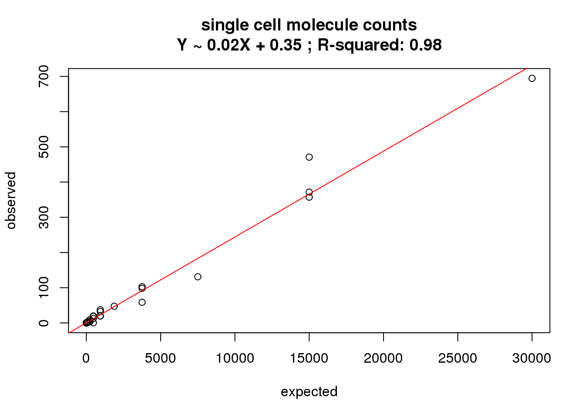
What is the correlation of the mean molecule counts in the bulk samples to the expected concentrations?
correlate_ercc(rowMeans(molecules_bulk[ercc_rows, ]), ercc$conc_mix1,
description = "bulk molecule counts")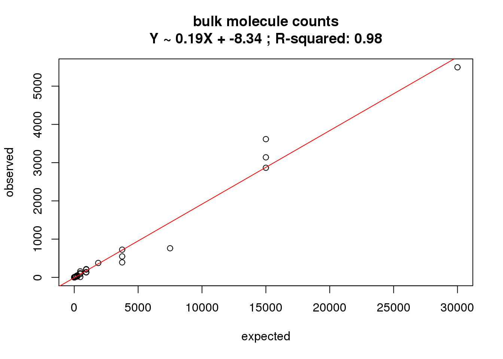
What is the correlation of the mean molecule log2 counts per million in the single cells to the expected concentrations?
correlate_ercc(rowMeans(molecules_single_cpm[ercc_rows, ]), log2(ercc$conc_mix1),
description = "single cell log2 cpm")
What is the correlation of the mean molecule log2 counts per million in the bulk samples to the expected concentrations?
correlate_ercc(rowMeans(molecules_bulk_cpm[ercc_rows, ]), log2(ercc$conc_mix1),
description = "bulk log2 cpm")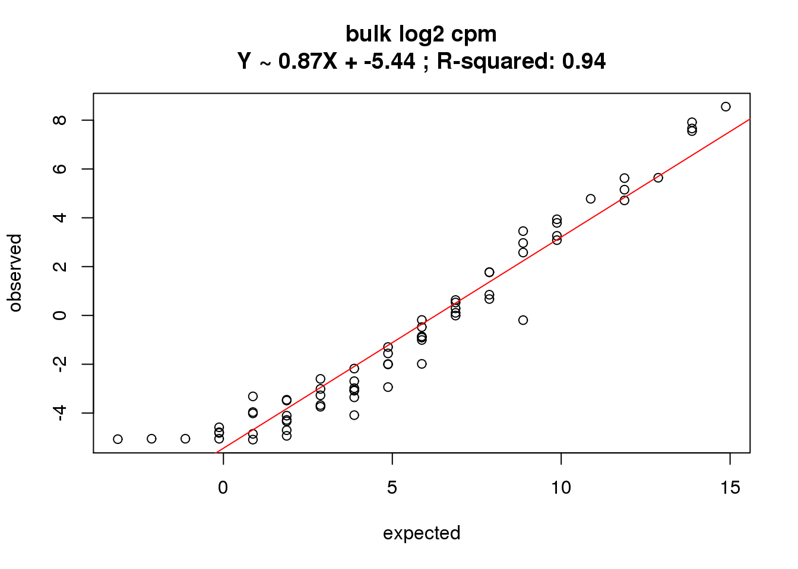
How much variation is there in the correlation between the samples? The following analysis uses the log2 cpm in single cells.
ercc_per_sample <- matrix(nrow = ncol(molecules_single_cpm), ncol = 6)
colnames(ercc_per_sample) <- c("individual", "batch", "well",
"intercept", "slope", "r2")
for (i in 1:ncol(molecules_single_cpm)) {
fit <- lm(molecules_single_cpm[ercc_rows, i] ~ log2(ercc$conc_mix1))
ercc_per_sample[i, ] <- c(anno$individual[i], anno$batch[i], anno$well[i],
fit$coefficients[1], fit$coefficients[2],
summary(fit)$r.squared)
}
ercc_per_sample <- as.data.frame(ercc_per_sample, stringsAsFactors = FALSE)
ercc_per_sample$intercept <- as.numeric(ercc_per_sample$intercept)
ercc_per_sample$slope <- as.numeric(ercc_per_sample$slope)
ercc_per_sample$r2 <- as.numeric(ercc_per_sample$r2)
stopifnot(!is.na(ercc_per_sample))
str(ercc_per_sample)'data.frame': 632 obs. of 6 variables:
$ individual: chr "19098" "19098" "19098" "19098" ...
$ batch : chr "1" "1" "1" "1" ...
$ well : chr "A01" "A02" "A05" "A06" ...
$ intercept : num 0.0812 -0.0604 0.0161 -0.2162 0.1014 ...
$ slope : num 0.703 0.685 0.668 0.712 0.713 ...
$ r2 : num 0.765 0.718 0.721 0.792 0.788 ...boxplot(intercept ~ batch + individual, data = ercc_per_sample, las = 2,
main = "Variation in the intercept term", ylab = "Intercept")
boxplot(slope ~ batch + individual, data = ercc_per_sample, las = 2,
main = "Variation in the slope term", ylab = "Slope")
boxplot(r2 ~ batch + individual, data = ercc_per_sample, las = 2,
main = "Variation in R-squared", ylab = "R-squared")
As expected, batch 2 of individual 19098 is an outlier.
Linear shift normalization
Perform the normalization separately for bulk and single cells. Use the counts per million.
Adjust each individual sample based on its ERCC counts.
bulk_norm <- molecules_bulk_cpm
bulk_norm[, ] <- NA
for (i in 1:ncol(bulk_norm)) {
bulk_fit <- lm(molecules_bulk_cpm[ercc_rows, i] ~ log2(ercc$conc_mix1))
# Y = mX + b -> X = (Y + b) / m
bulk_norm[, i] <- (molecules_bulk_cpm[, i] + bulk_fit$coefficients[1]) /
bulk_fit$coefficients[2]
}
stopifnot(!is.na(bulk_norm))single_norm <- molecules_single_cpm
single_norm[, ] <- NA
for (i in 1:ncol(single_norm)) {
single_fit <- lm(molecules_single_cpm[ercc_rows, i] ~ log2(ercc$conc_mix1))
# Y = mX + b -> X = (Y + b) / m
single_norm[, i] <- (molecules_single_cpm[, i] + single_fit$coefficients[1]) /
single_fit$coefficients[2]
}
stopifnot(!is.na(single_norm))RUVseq normalization
Use RUVg from Risso et al., 2014. It uses the ERCC spike-ins as negative control genes to correct for unwanted variation. It uses counts as input and output. It requires one parameter to be chosen: k is the “number of factors of unwanted variation to be estimated from the data”.
For k = 1:
bulk_ruv_object_k1 <- RUVg(x = as.matrix(molecules_bulk), cIdx = ercc_rows, k = 1)
bulk_ruv_k1 <- bulk_ruv_object_k1$normalizedCounts
bulk_ruv_cpm_k1 <- cpm(bulk_ruv_k1, log = TRUE,
lib.size = calcNormFactors(bulk_ruv_k1) * colSums(bulk_ruv_k1))single_ruv_object_k1 <- RUVg(x = as.matrix(molecules_single), cIdx = ercc_rows, k = 1)
single_ruv_k1 <- single_ruv_object_k1$normalizedCounts
single_ruv_cpm_k1 <- cpm(single_ruv_k1, log = TRUE,
lib.size = calcNormFactors(single_ruv_k1) * colSums(single_ruv_k1))For k = 5:
bulk_ruv_object_k5 <- RUVg(x = as.matrix(molecules_bulk), cIdx = ercc_rows, k = 5)
bulk_ruv_k5 <- bulk_ruv_object_k5$normalizedCounts
bulk_ruv_cpm_k5 <- cpm(bulk_ruv_k5, log = TRUE,
lib.size = calcNormFactors(bulk_ruv_k5) * colSums(bulk_ruv_k5))single_ruv_object_k5 <- RUVg(x = as.matrix(molecules_single), cIdx = ercc_rows, k = 5)
single_ruv_k5 <- single_ruv_object_k5$normalizedCounts
single_ruv_cpm_k5 <- cpm(single_ruv_k5, log = TRUE,
lib.size = calcNormFactors(single_ruv_k5) * colSums(single_ruv_k5))For k = 10:
bulk_ruv_object_k10 <- RUVg(x = as.matrix(molecules_bulk), cIdx = ercc_rows, k = 10)
bulk_ruv_k10 <- bulk_ruv_object_k10$normalizedCounts
bulk_ruv_cpm_k10 <- cpm(bulk_ruv_k10, log = TRUE,
lib.size = calcNormFactors(bulk_ruv_k10) * colSums(bulk_ruv_k10))single_ruv_object_k10 <- RUVg(x = as.matrix(molecules_single), cIdx = ercc_rows, k = 10)
single_ruv_k10 <- single_ruv_object_k10$normalizedCounts
single_ruv_cpm_k10 <- cpm(single_ruv_k10, log = TRUE,
lib.size = calcNormFactors(single_ruv_k10) * colSums(single_ruv_k10))k = 10 removes all gene expression variation from the bulk data:
sum(apply(bulk_ruv_cpm_k10[gene_rows, ], 1, var) == 0)[1] 17139nrow(bulk_ruv_cpm_k10[gene_rows, ])[1] 17139For k = 30 for single cells only:
single_ruv_object_k30 <- RUVg(x = as.matrix(molecules_single), cIdx = ercc_rows, k = 30)
single_ruv_k30 <- single_ruv_object_k30$normalizedCounts
single_ruv_cpm_k30 <- cpm(single_ruv_k30, log = TRUE,
lib.size = calcNormFactors(single_ruv_k30) * colSums(single_ruv_k30))Empirical quantile normalization
Instead of using the ERCC specifically as a guide, simply perform an empirical quantile normalization (including both the genes and ERCC controls).
# from package preprocessCore
bulk_quant <- normalize.quantiles(as.matrix(molecules_bulk_cpm))single_quant <- normalize.quantiles(as.matrix(molecules_single_cpm))Loess normalization
Lovén et al. 2014 used a loess regression to normalize expression data with the ERCC probes. Below is their description:
We used a loess regression to renormalize these MAS5 normalized probe set values by using only the spike-in probe sets to fit the loess. The affy package provides a function, loess.normalize, which will perform loess regression on a matrix of values (defined by using the parameter mat) and allows for the user to specify which subset of data to use when fitting the loess (defined by using the parameter subset, see the affy package documentation for further details). For this application, the parameters mat and subset were set as the MAS5-normalized values and the row indices of the ERCC control probe sets, respectively. The default settings for all other parameters were used. The result of this was a matrix of expression values normalized to the control ERCC probes.
Risso et al. 2014 argue that regression-based approaches like this and the linear shift performed above do not work well:
The good performance of RUVg compared to global-scaling and regression-based normalization can be explained by the different assumptions underlying each approach. Global-scaling and regression-based normalization methods assume that unwanted technical effects (i.e., between-sample differences excluding biological effects of interest) are roughly the same for genes and spike-ins and are captured by either a single parameter per sample or a regression function between pairs of samples. Such assumptions were clearly violated for our data sets (e.g., Fig. 4d). RUVg, on the other hand, only assumes that the factors of unwanted variation estimated from the spike-ins span the same linear space as the factors of unwanted variation W for all of the genes.
# From the package affy
bulk_loess <- normalize.loess(mat = as.matrix(molecules_bulk_cpm),
subset = ercc_rows, log.it = FALSE)Done with 1 vs 2 in iteration 1
Done with 1 vs 3 in iteration 1
Done with 1 vs 4 in iteration 1
Done with 1 vs 5 in iteration 1
Done with 1 vs 6 in iteration 1
Done with 1 vs 7 in iteration 1
Done with 1 vs 8 in iteration 1
Done with 1 vs 9 in iteration 1
Done with 2 vs 3 in iteration 1
Done with 2 vs 4 in iteration 1
Done with 2 vs 5 in iteration 1
Done with 2 vs 6 in iteration 1
Done with 2 vs 7 in iteration 1
Done with 2 vs 8 in iteration 1
Done with 2 vs 9 in iteration 1
Done with 3 vs 4 in iteration 1
Done with 3 vs 5 in iteration 1
Done with 3 vs 6 in iteration 1
Done with 3 vs 7 in iteration 1
Done with 3 vs 8 in iteration 1
Done with 3 vs 9 in iteration 1
Done with 4 vs 5 in iteration 1
Done with 4 vs 6 in iteration 1
Done with 4 vs 7 in iteration 1
Done with 4 vs 8 in iteration 1
Done with 4 vs 9 in iteration 1
Done with 5 vs 6 in iteration 1
Done with 5 vs 7 in iteration 1
Done with 5 vs 8 in iteration 1
Done with 5 vs 9 in iteration 1
Done with 6 vs 7 in iteration 1
Done with 6 vs 8 in iteration 1
Done with 6 vs 9 in iteration 1
Done with 7 vs 8 in iteration 1
Done with 7 vs 9 in iteration 1
Done with 8 vs 9 in iteration 1
1 5.409571 There is an issue with the ercc controls when trying to perform loess regression. It appears fine when there is no subsetting, but it takes so long to run I didn’t let it finish. Since the loess regression on the bulk samples gives a similar to result to the linear shift (not surprisingly since they are both regression-based methods), this does not seem worth the effort to debug. The code below is a record of what I tried and is not evaluated.
single_loess <- normalize.loess(mat = as.matrix(molecules_single_cpm),
subset = ercc_rows, log.it = FALSE)PCA comparison
These analyses exclude the ERCC controls.
Raw bulk data:
pca_bulk_raw <- run_pca(molecules_bulk_cpm[gene_rows, ])
plot_pca(pca_bulk_raw$PCs, explained = pca_bulk_raw$explained,
metadata = anno[anno$well == "bulk", ], color = "individual",
shape = "batch", factors = c("individual", "batch"))
Normalized with a linear shift bulk data:
pca_bulk_norm <- run_pca(bulk_norm[gene_rows, ])
plot_pca(pca_bulk_norm$PCs, explained = pca_bulk_norm$explained,
metadata = anno[anno$well == "bulk", ], color = "individual",
shape = "batch", factors = c("individual", "batch"))
RUVg-normalized bulk data with k = 1:
pca_bulk_ruv_k1 <- run_pca(bulk_ruv_cpm_k1[gene_rows, ])
plot_pca(pca_bulk_ruv_k1$PCs, explained = pca_bulk_ruv_k1$explained,
metadata = anno[anno$well == "bulk", ], color = "individual",
shape = "batch", factors = c("individual", "batch"))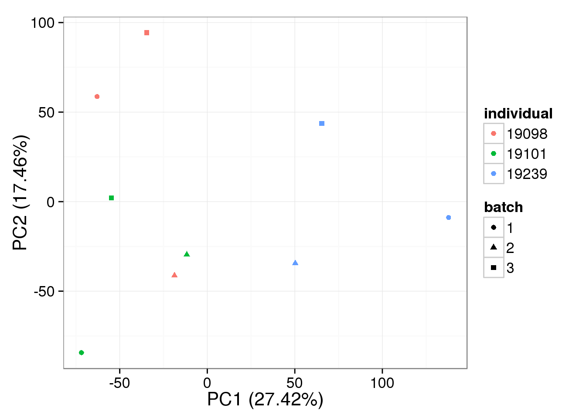
RUVg-normalized bulk data with k = 5:
pca_bulk_ruv_k5 <- run_pca(bulk_ruv_cpm_k5[gene_rows, ])
plot_pca(pca_bulk_ruv_k5$PCs, explained = pca_bulk_ruv_k5$explained,
metadata = anno[anno$well == "bulk", ], color = "individual",
shape = "batch", factors = c("individual", "batch"))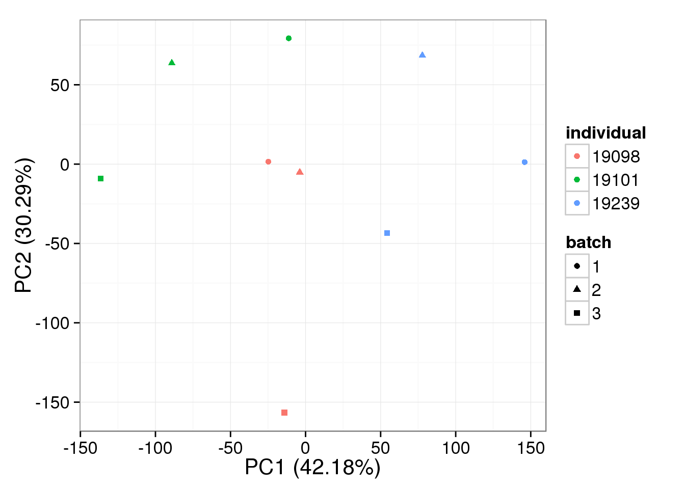
Quantile-normalized bulk data:
pca_bulk_quant <- run_pca(bulk_quant[gene_rows, ])
plot_pca(pca_bulk_quant$PCs, explained = pca_bulk_quant$explained,
metadata = anno[anno$well == "bulk", ], color = "individual",
shape = "batch", factors = c("individual", "batch"))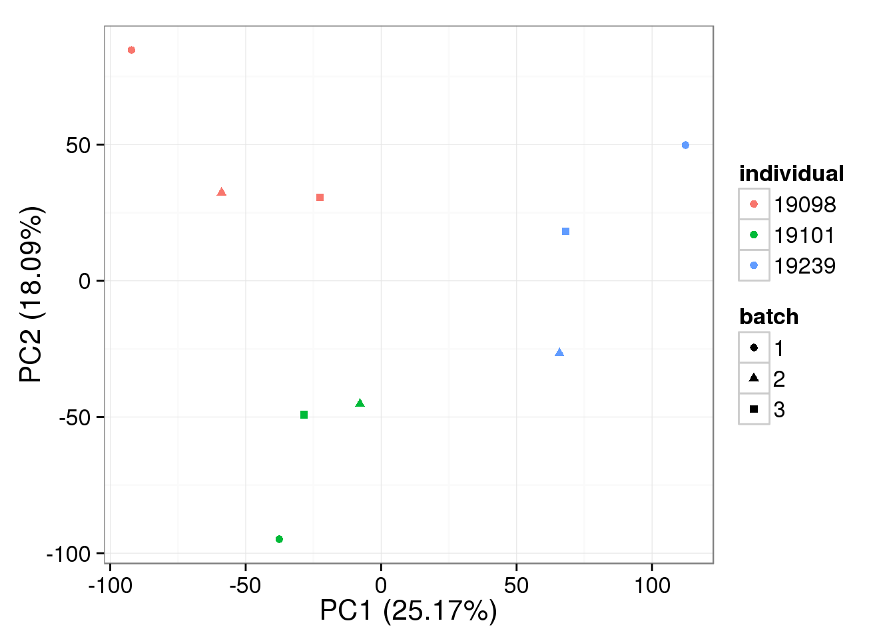
Loess-normalized bulk data:
pca_bulk_loess <- run_pca(bulk_loess[gene_rows, ])
plot_pca(pca_bulk_loess$PCs, explained = pca_bulk_loess$explained,
metadata = anno[anno$well == "bulk", ], color = "individual",
shape = "batch", factors = c("individual", "batch"))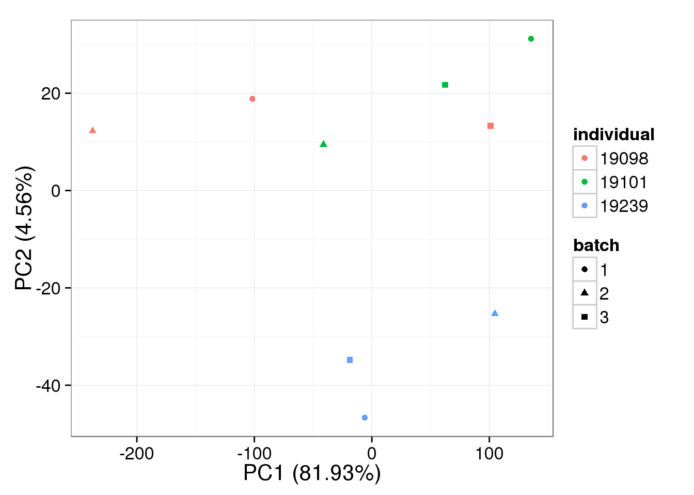
Raw single cell data:
pca_single_raw <- run_pca(molecules_single_cpm[gene_rows, ])
plot_pca(pca_single_raw$PCs, explained = pca_single_raw$explained,
metadata = anno[anno$well != "bulk", ], color = "individual",
shape = "batch", factors = c("individual", "batch"))
Normalized with a linear shift single cell data:
pca_single_norm <- run_pca(single_norm[gene_rows, ])
plot_pca(pca_single_norm$PCs, explained = pca_single_norm$explained,
metadata = anno[anno$well != "bulk", ], color = "individual",
shape = "batch", factors = c("individual", "batch"))
RUVg-normalized single cell data with k = 1:
pca_single_ruv_k1 <- run_pca(single_ruv_cpm_k1[gene_rows, ])
plot_pca(pca_single_ruv_k1$PCs, explained = pca_single_ruv_k1$explained,
metadata = anno[anno$well != "bulk", ], color = "individual",
shape = "batch", factors = c("individual", "batch"))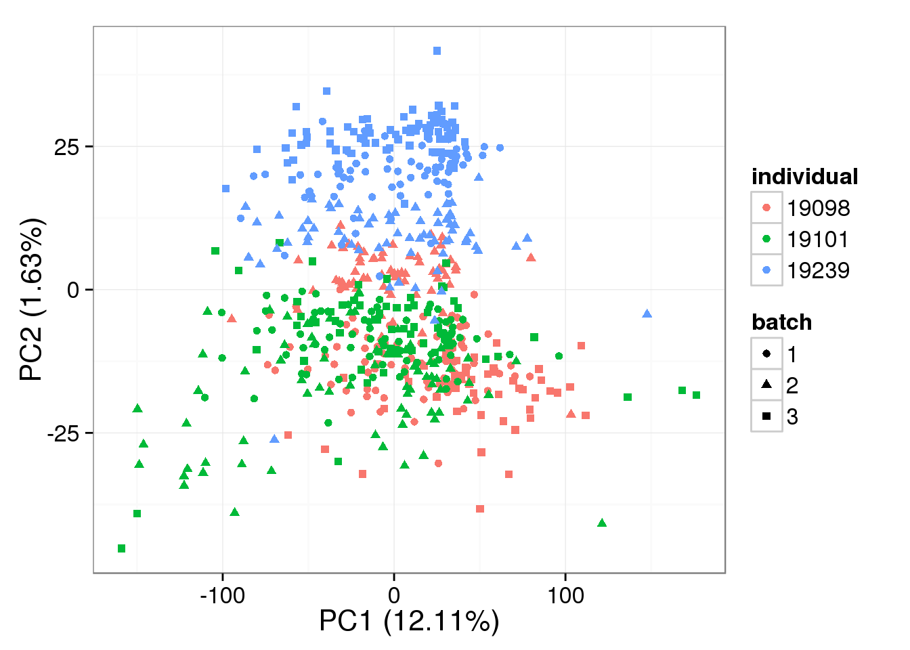
RUVg-normalized single cell data with k = 5:
pca_single_ruv_k5 <- run_pca(single_ruv_cpm_k5[gene_rows, ])
plot_pca(pca_single_ruv_k5$PCs, explained = pca_single_ruv_k5$explained,
metadata = anno[anno$well != "bulk", ], color = "individual",
shape = "batch", factors = c("individual", "batch"))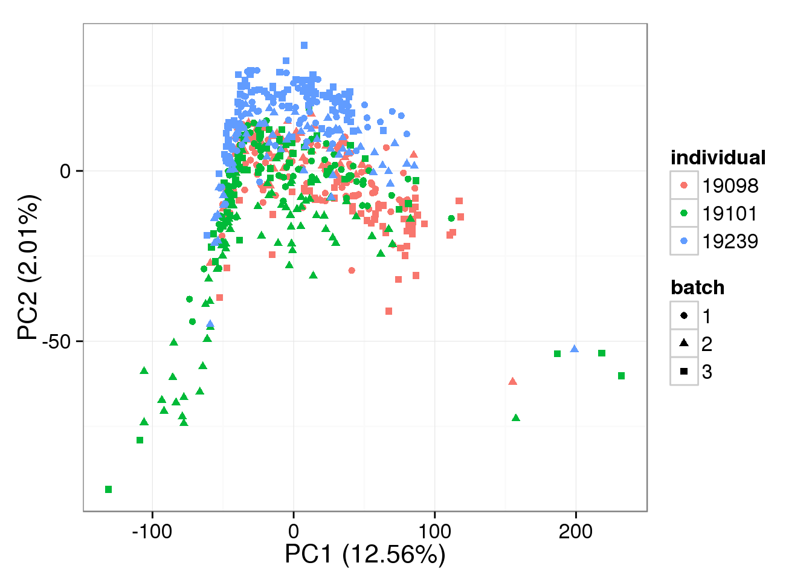
RUVg-normalized single cell data with k = 10:
pca_single_ruv_k10 <- run_pca(single_ruv_cpm_k10[gene_rows, ])
plot_pca(pca_single_ruv_k10$PCs, explained = pca_single_ruv_k10$explained,
metadata = anno[anno$well != "bulk", ], color = "individual",
shape = "batch", factors = c("individual", "batch"))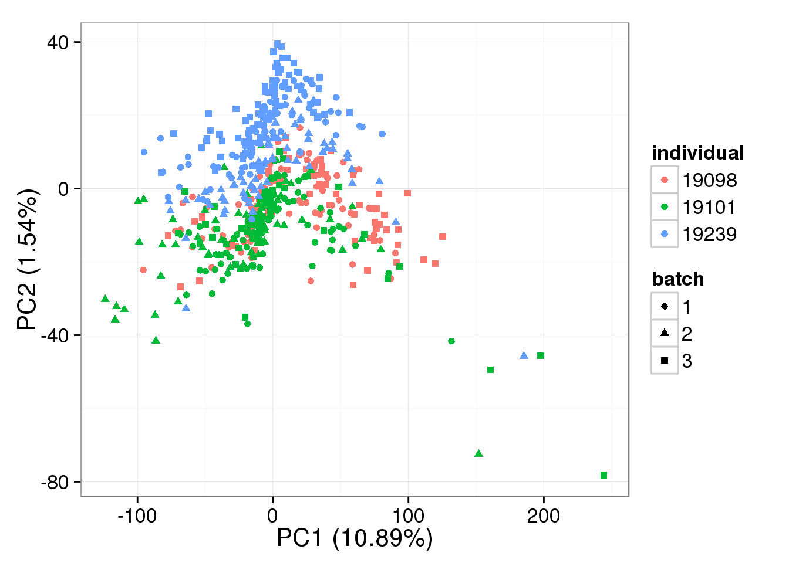
RUVg-normalized single cell data with k = 30:
pca_single_ruv_k30 <- run_pca(single_ruv_cpm_k30[gene_rows, ])
plot_pca(pca_single_ruv_k30$PCs, explained = pca_single_ruv_k30$explained,
metadata = anno[anno$well != "bulk", ], color = "individual",
shape = "batch", factors = c("individual", "batch"))
Quantile-normalized single cell data:
pca_single_quant <- run_pca(single_quant[gene_rows, ])
plot_pca(pca_single_quant$PCs, explained = pca_single_quant$explained,
metadata = anno[anno$well != "bulk", ], color = "individual",
shape = "batch", factors = c("individual", "batch"))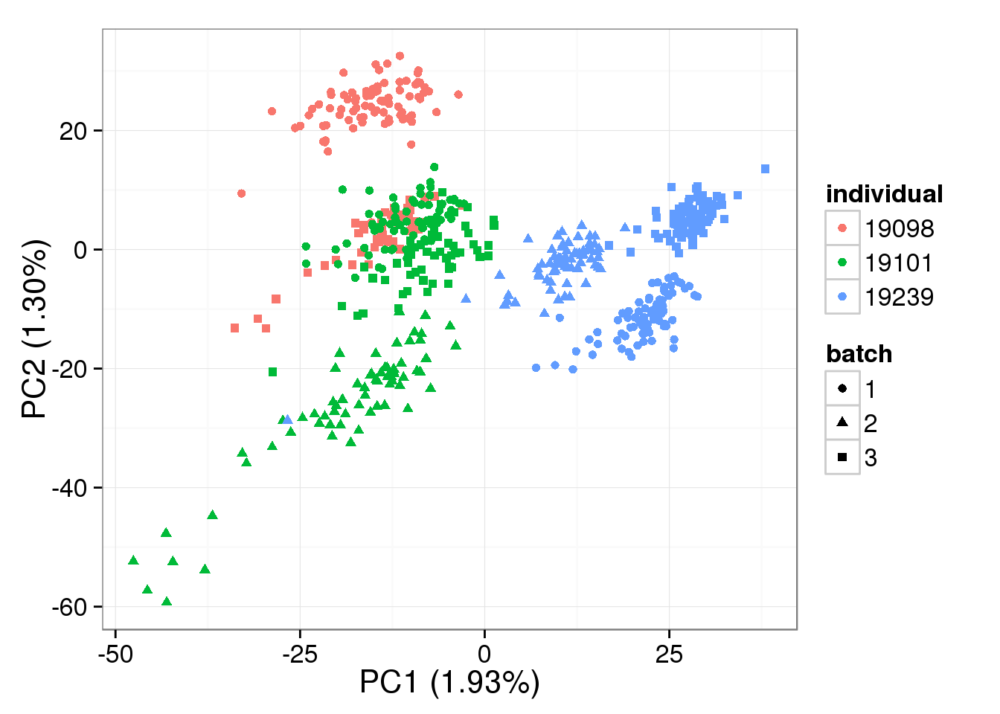
Session information
sessionInfo()R version 3.2.0 (2015-04-16)
Platform: x86_64-unknown-linux-gnu (64-bit)
locale:
[1] LC_CTYPE=en_US.UTF-8 LC_NUMERIC=C
[3] LC_TIME=en_US.UTF-8 LC_COLLATE=en_US.UTF-8
[5] LC_MONETARY=en_US.UTF-8 LC_MESSAGES=en_US.UTF-8
[7] LC_PAPER=en_US.UTF-8 LC_NAME=C
[9] LC_ADDRESS=C LC_TELEPHONE=C
[11] LC_MEASUREMENT=en_US.UTF-8 LC_IDENTIFICATION=C
attached base packages:
[1] stats4 parallel stats graphics grDevices utils datasets
[8] methods base
other attached packages:
[1] testit_0.4 affy_1.46.0
[3] preprocessCore_1.30.0 RUVSeq_1.2.0
[5] EDASeq_2.2.0 ShortRead_1.26.0
[7] GenomicAlignments_1.4.1 Rsamtools_1.20.4
[9] GenomicRanges_1.20.5 GenomeInfoDb_1.4.0
[11] Biostrings_2.36.1 XVector_0.8.0
[13] IRanges_2.2.4 S4Vectors_0.6.0
[15] BiocParallel_1.2.2 Biobase_2.28.0
[17] BiocGenerics_0.14.0 ggplot2_1.0.1
[19] edgeR_3.10.2 limma_3.24.9
[21] knitr_1.10.5
loaded via a namespace (and not attached):
[1] Rcpp_0.11.6 lattice_0.20-31 digest_0.6.8
[4] plyr_1.8.2 futile.options_1.0.0 aroma.light_2.4.0
[7] RSQLite_1.0.0 DESeq_1.20.0 evaluate_0.7
[10] BiocInstaller_1.18.2 zlibbioc_1.14.0 annotate_1.46.0
[13] R.utils_2.1.0 R.oo_1.19.0 rmarkdown_0.6.1
[16] proto_0.3-10 labeling_0.3 splines_3.2.0
[19] geneplotter_1.46.0 stringr_1.0.0 munsell_0.4.2
[22] htmltools_0.2.6 matrixStats_0.14.0 XML_3.98-1.2
[25] MASS_7.3-40 bitops_1.0-6 R.methodsS3_1.7.0
[28] grid_3.2.0 xtable_1.7-4 gtable_0.1.2
[31] DBI_0.3.1 magrittr_1.5 formatR_1.2
[34] scales_0.2.4 stringi_0.4-1 hwriter_1.3.2
[37] reshape2_1.4.1 genefilter_1.50.0 affyio_1.36.0
[40] latticeExtra_0.6-26 futile.logger_1.4.1 lambda.r_1.1.7
[43] RColorBrewer_1.1-2 tools_3.2.0 survival_2.38-1
[46] yaml_2.1.13 AnnotationDbi_1.30.1 colorspace_1.2-6